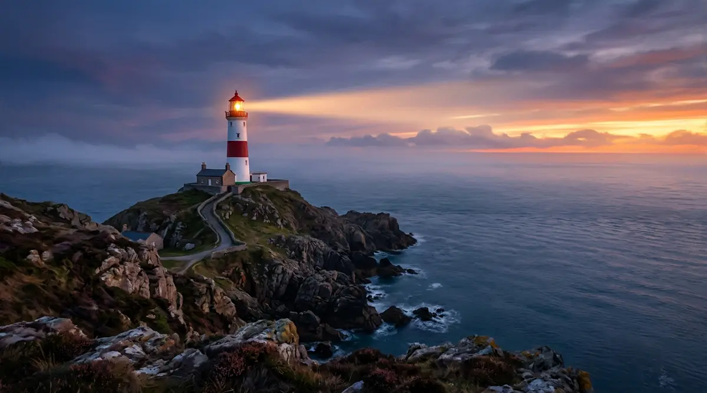

For more than two thousand years, lighthouses have stood at the edge of the world as silent promises to those at sea. From the great Pharos of Alexandria to the lonely towers clinging to Atlantic cliffs, they were built where land and water meet most dangerously, their beams sweeping the dark to warn of hidden rocks and to point the way toward harbor. Generations of keepers climbed their spiral stairs each night to trim wicks, polish lenses, and wind the clockwork that turned the light, often living in isolation for months at a time. Today most lighthouses run automatically, and satellite navigation has replaced much of their work, yet they endure as some of the most beloved structures on any coastline — reminders that, however wild the night, someone once kept a light burning to bring strangers safely home.